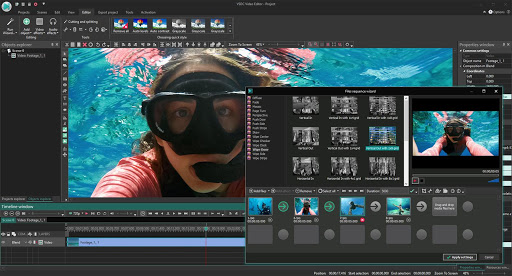
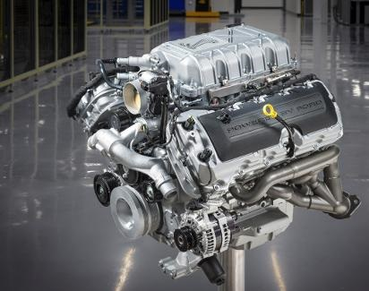

Sobre mim
Atualmente sou aluno do Centro Paula Souza na ETEC Prof. Maria Cristina Medeiros. Aprendo as disciplinas na área de informática e desenvolvimento de projetos.
Especialidades
Facilidade em explicar e em aprender
Tenho paciência para explicar as coisas a outras pessoas, e tenho facilidade em aprender sobre os assuntos diversos, gosto muito de auxiliar as pessoas em relação a tecnologia.
Tenho bastante interesse em tecnologia
Tenho bastante interesse em programação e em programar coisas relacionadas a carros, tenho muito interesse em tecnologias relacionadas a carro, desde a parte de desenvolvimento de software para controle de carro, e em software para a construção de carros, e para jogos.
Tenho facilidade com as mídias sociais
Tenho facilidade com as mídias sociais no quesito de gravação, edição, formato de vídeo e edição de imagens.
Sei bastante coisa sobre computadores e carros
Tenho facilidade em mexer com hardware e carros sei algumas coisas quando relacionado com motores.
Minhas principais competencias Socioemocionais
Veja aqui quais são todas as competencias pela BNCC

Eu gosto muito de me envolver em causas sociais para ajudar a outras pessoas
Sou muito curioso e gosto de aprender coisas novas e estou sempre disposto a ver no que eu errei para melhorar

Eu gosto muito de ajudar as pessoas e com isso aprendi a aceita-las como são e a ajuda-las no que elas precisarem